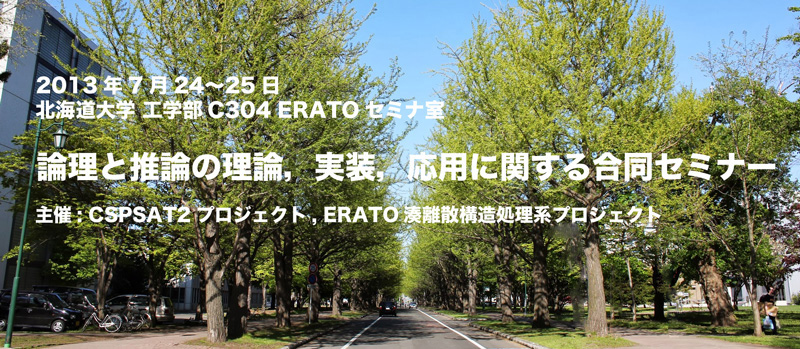

論理と推論の理論, 実装, 応用に関する合同セミナー

概要
- 会議名
- 論理と推論の理論, 実装, 応用に関する合同セミナー
- 日程
- 2013年7月24日(水)-25日(木)
- 用務先
- 北海道大学 工学部C304 ERATOセミナ室 (アクセスマップ)
- 用務地
- 〒060-0814 北海道札幌市北区北14条西9丁目
- 主催
プログラム
| 7月24日(水) | |
|---|---|
| 13:50 - 14:00 | オープニング |
| 田村直之 (神戸大学) | |
| 14:00 - 15:00 | 特別講演 「ERATO湊離散構造処理系プロジェクトの近況と今後の展望」[PDF] |
| 湊真一 (北海道大学) [概要] | |
| 15:00 - 15:10 | 休憩 |
| 15:10 - 16:10 | 特別講演 「制約充足問題のSAT符号化」[PDF] |
| 田村直之 (神戸大学) [概要] | |
| 16:10 - 16:20 | 休憩 |
| 16:20 - 17:20 | 招待講演 「制約を利用したSAT解法」[PDF] |
| 長谷川隆三 (九州大学) [概要] | |
| 17:20 - 17:30 | 休憩 |
| 17:30 - 18:30 | 招待講演 「Programming and Modelchecking with Hypergraphs」[PDF] |
| 上田和紀 (早稲田大学) [概要] | |
| 19:30 - | 懇親会 |
| 7月25日(木) | |
|---|---|
| 09:30 - 10:30 | 招待講演 「メカニズムデザインと最適化」[PDF] [PPTX] |
| 横尾真 (九州大学) [概要] | |
| 10:30 - 10:40 | 休憩 |
| 10:40 - 11:40 | 招待講演 「緩和+分解+調整による分散協調問題解決」[PDF] [PPTX] |
| 平山勝敏 (神戸大学) [概要] | |
| 11:40 - 13:00 | 昼食 |
| 13:00 - 14:00 | 招待講演 「バーストを伴うデータストリームのマイニングその他について」[PDF] |
| 岩沼宏治 (山梨大学) [概要] | |
| 14:00 - 14:10 | 休憩 |
| 14:10 - 15:10 | 特別講演 「動的ネットワークの論理モデルに関する推論と学習」[PDF] (英語タイトル: Inference of Dynamic Boolean Networks) |
| 井上克巳 (国立情報学研究所) [概要] [Abstract] | |
| 15:10 - 15:20 | 休憩 |
| 15:20 - 16:20 | 招待講演 「論理、確率、機械学習」[PDF] |
| 佐藤泰介 (東京工業大学) [概要] | |
| 16:20 - 16:30 | 休憩 |
| 16:30 - 18:30 | デモ発表 「SAT型制約プログラミングシステムのための高速開発ツール」[PDF] 宋剛秀 (神戸大学) [概要] |
| デモ発表 「GlueMiniSat 2.2.7: On-The-Fly Lazy Clause Simplification」[PDF] 鍋島英知 (山梨大学) [概要] | |
| デモ発表 「QwMaxSAT: a Weighted Partial MaxSAT Solver」[PDF] [PPTX] 越村三幸 (九州大学) [概要] | |
| デモ発表 「SCSat: A Soft Constraint Guided SAT Solver」[PDF] [PPTX] (補足資料) SCSat (+Ramsey パッケージ) デモンストレーション 藤田博 (九州大学) [概要] | |
| デモ発表 「Graphillion」 中元政一 (ERATO湊離散構造処理系プロジェクト) [PDF] | |
| 18:30 - 18:40 | クロージング |
| 湊真一 (北海道大学) | |
| 19:45 - | 懇親会 |
| 7月26日(金) | |
|---|---|
| 第3回CSPSAT2研究会 (注) |
参加申込み方法
本合同セミナーはどなたにもご参加頂けます．
参加をご希望される方は氏名, 所属, 参加日程を宋 (
 ) までお送りください．
) までお送りください．
懇親会情報
- 7月24日(水) 19時30分〜21時30分
- くし路 (新北海道ビル店)
- 〒060-0807 札幌市北区北7条西4丁目 新北海道ビルB1F
- TEL: 011-737-0888
- (予算) 5000円程度
- (アクセス) JR札幌駅西通り北口から徒歩1分．詳細はこちら
- 7月25日(木) 19時45分〜21時45分
その他
- 合同セミナー終了後, 発表資料は, 本Webページに認証付きで公開させていただく予定です．
- 遠方の方で，ハンドアウト等の配布物がありましたら，ファイル(PDF)と部数を宋までご連絡ください．
- 内部資料